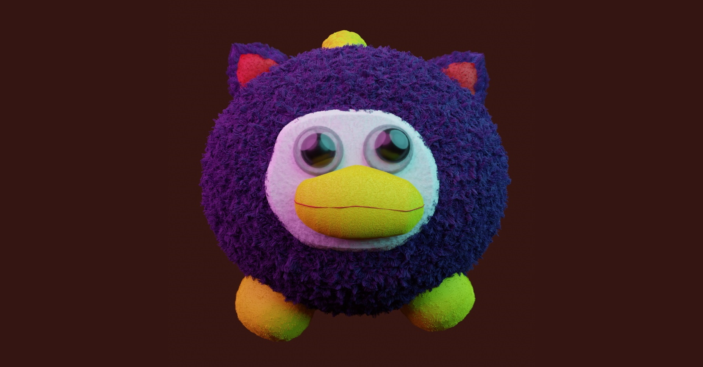
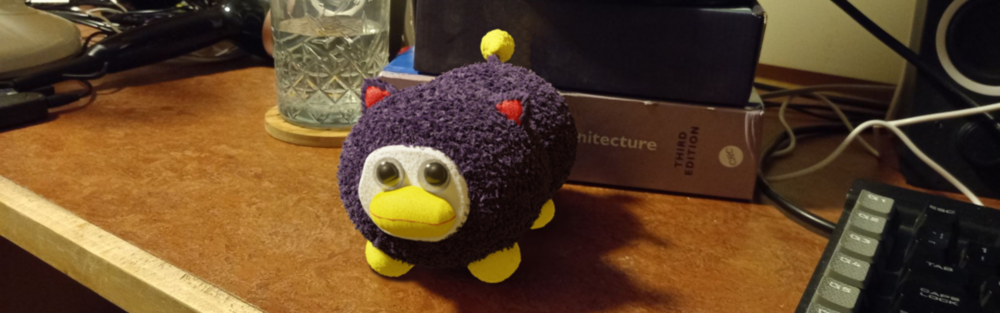
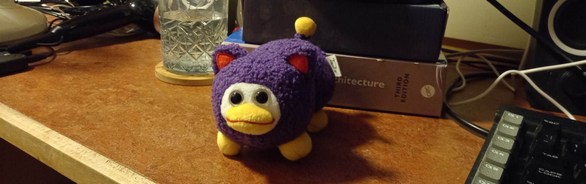
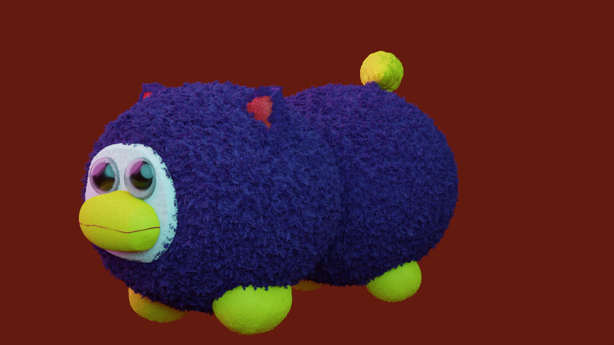

Peepy
Blender
Modelling
Personal Project
Solo Project
This is a model of a "mistakepy" from Itemlabel.com. I modelled and rendered it in Blender.
This model was an attempt at recreating the plush mistakepy that I own. The real one looks like this:
Just kidding! That was the model edited onto my desk. This is the actual real one:
It makes extensive use of Blender's hair system to simulate the various materials. Its face and legs are asymmetrical in all the same ways as the real one.
I also embarked on a project a while after the original was complete, aiming to make a slightly more horror oriented take on the plush.